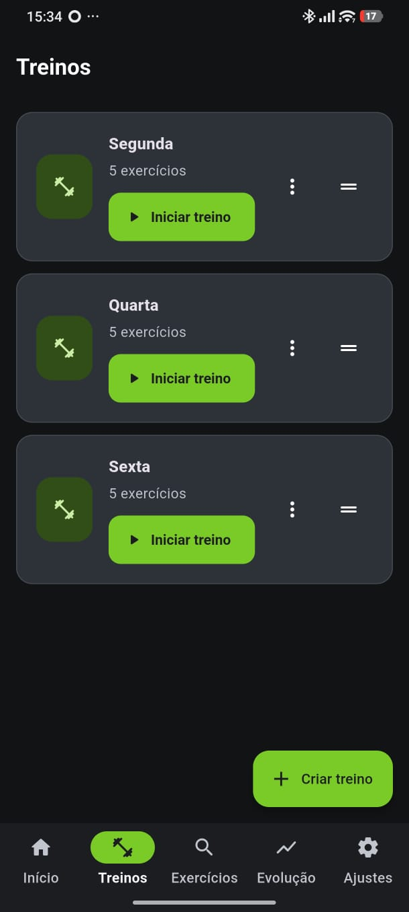
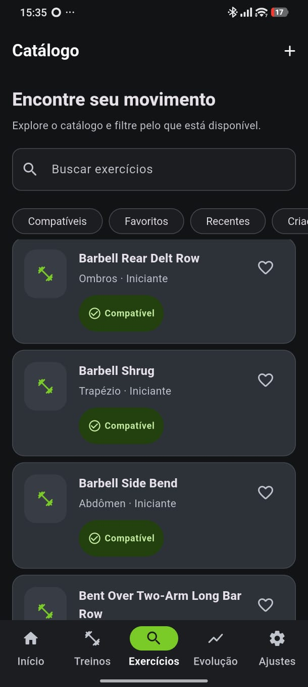
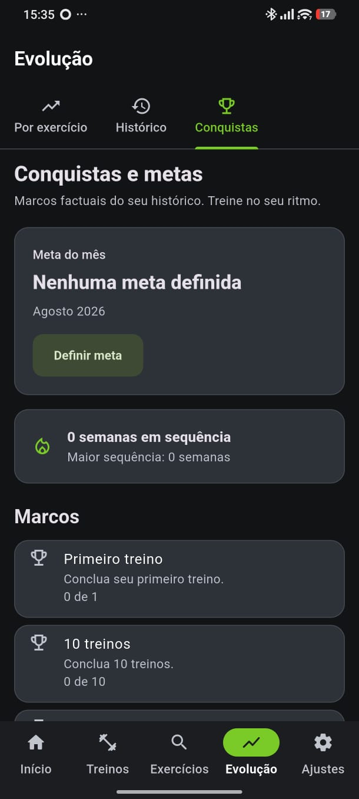

Construído para quem treina de verdade: registro rápido, dados que não somem e nada obrigando você a ficar online.
Treinos, histórico e progresso ficam salvos no seu aparelho, sem depender de internet para nada do dia a dia.
Cadastre o que você tem disponível no seu espaço de treino e o EvoLift avisa quando um exercício não é compatível.
Acompanhe cargas, recordes pessoais e o histórico completo de cada treino que você já fez.
Quer sincronizar entre aparelhos? Crie uma conta quando quiser. Sem conta, o app funciona igual.
Prints reais do aplicativo em uso.



Instale o EvoLift e comece a treinar hoje. Funciona offline, e a conta é opcional.
Baixar no Google PlayTire dúvidas sobre conta, sincronização, backup e privacidade.
O EvoLift é uma ferramenta de organização e acompanhamento de treinos. Ele não substitui orientação médica, diagnóstico, tratamento ou acompanhamento de profissionais de saúde e educação física.